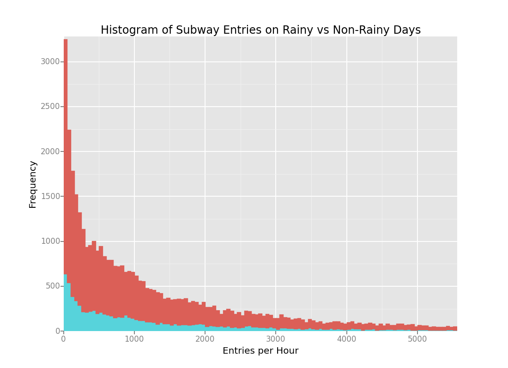
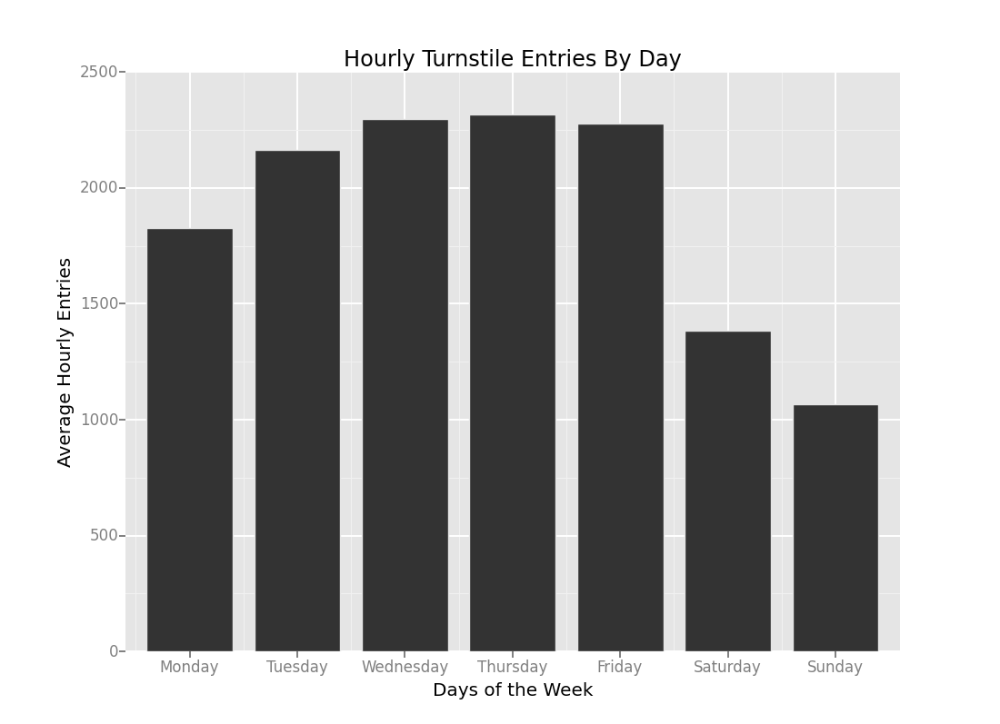

The statistical test used to analyse the New York City Subway Data was the Mann Whitney U test. The null hypothesis is that the ridership of the subway on rainy and non rainy days is equivalent. I used a one tailed P value with a significance (p-critical value) of 5%, to determine if the ridership on rainy days was significantly higher than on days with no rain.
This test is applicable because the underlying distributions are not normal (therefore making the test more effective than a t-test) and have different sample sizes, variances. The Mann Whitney U test does not make any assumptions regarding the distribution, sample size and variance.
The p-value returned from the test (using a normal approximation of the U statistic for large sample sizes) is 0.0000027 which is below the significance level of 0.05. The mean ridership on rainy days is 2028 and 1846 for non rainy days.
The statistical test indicated that it was significantly unlikely that the ridership on rainy days is equivalent to the ridership on non rainy days. It leads us to believe that ridership is higher on days with rain.
Since we had already been exposed to gradient descent in the problem sets, I chose to use the ordinary least squares model from the statsmodel library.
The features that I chose from the advanced dataset are rain, hour, day_week, weekday, wspdi, meanwspdi, fog, meantempi, tempi, precipi, meanprecipi, meanpressurei, pressurei.
I also included two dummy variables. These were the set of turnstile units, and the set of weather conditions on a given day.
I tried to include any variable that has an affect on the environment or determines a location in space/time.
The coefficients for the non-dummy variables are as follows:
My model returned an R-squared value of 0.493.
For social and behavioural data, an R-squared over 0.4 can be considered significant. Given that the dataset falls into this category, an R-squared of .493 would make the ordinary-least-squares method appropriate for this data set.

Unfortunately the legend does not seem to work for the histogram, however the non-rainy data is in blue
and the rainy data is in red.
This histogram shows the frequency that an amount of ridership happends on a given day. It is apparent that the ridership is not
normally distributed and rather follows an exponential distribution.
 This figure shows the entries through turnstile units by day of the week. The number of entries on a given day was averaged and then displayed along with the day. The data follows our general intuition that on weekdays there is significantly more use than on weekends. It is surprising however to see that Mondays have quite a lower average than other weekdays.
From the mann-whitney u test and the results of the ordinary least squares regression model I can confidently state that more people ride the subway on rainy days. This naturally aligns with our intuition that a person would be less inclined to ride their bike or walk when such conditions prevail.
There are several factors that contribute to the above stated conclusion. Before starting the analyses I believed that this would be the case, and with a higher median and mean for ridership on rainy days I could hypothesize that ridership on rainy days is higher than ridership on non-rainy days. First we can consider the results of the non parametric significance test -- the mann-whitney u test. We showed here that the data from rainy days and non-rainy days did not come from the same population. This along with the higher median, and mean suggest that rainy day ridership is higher. After proceeding to the least squares regression model, we get the following coefficients of the variables representing precipitation, rain, and mean precipitation.
The dataset only included data over the span of the month of May in 2011. This dataset may not be representative of the ridership anymore. It is possible that something has changed the behaviour of people since then or it may be the case that something caused people to behave differently than usual over the course of that month. I used a one-tailed p value with the null hypothesis that rainy days were more likely to produce higher ridership. The scipy mann whitney u test does not show the sum rank and mean rank for the two sample, but the descriptive statistics and least squares model did not indicate the opposite of the hypothesis. For this reason I did not feel it was necessary to calculate the mean and sum rank of the mann whitney u.